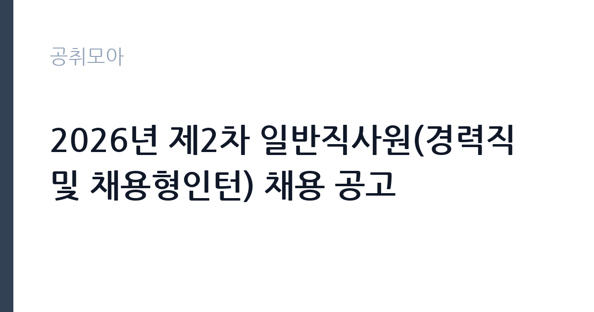

[공공기관] 2026년 제2차 일반직사원(경력직 및 채용형인턴) 채용 공고
코레일테크(주) · 서울 · 마감 2026-10-21 (D-14) · 출처 잡알리오

한눈에 보는 모집 조건
| 기관 | 코레일테크(주) |
|---|---|
| 공고명 | 2026년 제2차 일반직사원(경력직 및 채용형인턴) 채용 공고 |
| 고용형태 | 연수/실습 |
| 근무지 | 서울 |
| 게시일 | 2026-10-07 |
| 마감일 | 2026-10-21 (D-14) |
지원자격, 이렇게 읽으세요
- 공공기관 채용공시
- 세부 조건은 원문 공고문 확인
공통 응시자격은 만 18세 이상으로 정년인 만 61세 미만이며, 남성은 군필이나 면제자에 해당해야 합니다. 경력직은 직군별로 자격과 경력 기준이 정해져 있습니다. 전기 분야는 기사 이상 자격증에 실무경력 3년 이상, 또는 학사 학위에 관련 경력 5년 이상, 석사 이상에 관련 경력 3년 이상, 또는 관련 경력 7년 이상 중 하나를 충족해야 합니다. 다른 직군도 유사하게 자격증과 학위, 경력 중 하나를 요구하므로 본인 해당 직군의 기준을 원문에서 대조해야 합니다. 채용형인턴은 학력 무관으로 지원하는 분야가 있으며, 고졸 전형은 병역 기준이 다를 수 있습니다.
이 공고의 포인트
이 공고의 매력은 경력직과 채용형인턴을 동시에 뽑는다는 점입니다. 경력직은 관련 자격과 경력을 갖춘 분이 바로 지원할 수 있고, 채용형인턴은 12주 시용 근무 뒤 평가를 거쳐 일반직 6급 정규직으로 임용되는 경로입니다. 코레일테크는 코레일 자회사로 철도 차량 정비와 역사 관리, 안전 업무를 맡는 기관이라 철도 분야 경력을 쌓기에 좋습니다. 제1차 채용에서는 13명을 뽑았고 이번 2차에서는 19명으로 규모가 커졌습니다. 전형은 서류와 필기, 면접 3단계이며 배수가 공개되어 있어 전략을 세우기 쉽습니다.
전형은 어떻게 진행되나
전형은 1차 서류전형과 2차 필기전형, 최종 면접전형 순으로 진행됩니다. 제1차 채용 기준으로 서류전형에서는 20배수를 선발하고, 필기전형에서 7배수로 압축한 뒤, 면접전형에서 1배수를 선정했습니다. 필기전형은 NCS 직업기초능력과 직무수행능력 평가가 중심이 됩니다. 최종합격자는 12주간 시용사원 즉 채용형인턴으로 임용되며, 시용 기간 종료 시 근무 실적 등을 종합 평가해 일반직 임용 여부를 결정합니다. 경력직도 동일한 전형 틀을 따르되 직무별 평가 요소가 다를 수 있으니 원문 공고문에서 확인하시기 바랍니다.
원문에서 확인한 전형 방식
<공통 응시자격> 1. 만 18세 이상 및 정년(만 61세) 미만인 자 2. 남성의 경우 군필 또는 면제자에 한함 *고졸 분야 미해당 3. 코레일테크㈜ 채용 결격사유에 해당되지 않는 자 4. 임용일로부터 근무가 가능한 자 ※ 자격 기준은 공고일(2026. 10. 7.) 현재를 기준으로 하며 연령 및 병역 기준은 입사일(2026. 12. 14.)을 기준으로 함 □ 경력직-사업관리-전기 <다음 중 하나를 충족하는 자> 1) 전기분야 기사 이상 자격증 소지자로 해당 분야 실무경력이 3년 이상인 자 2) 전기분야 학사 이상의 학위 소지자로 해당 분야 관련 경력이 다음과 같은 자 - 학사: 5년 / 석사 이상: 3년 3) 전기분야 관련 경력이 7년 이상인 자 □ 경력직-사업관리-건축/기계 <다음 중 하나를 충족하는 자> 1) 건축 및 기계분야 기사 이상 자격증 소지자로 해당 분야 실무 경력이 3년 이상인 자 2) 건축 및 기계분야 학사 이상의 학위 소지자로 해당 분야 관련 경력이 다음과 같은 자 - 학사: 5년 / 석사 이상: 3년 3) 건축 및 기계분야 관련 경력이 7년 이상인 자 □ 안전관리: 산업안전보건법 시행
이런 분께 추천해요
- 전기 분야 기사 자격과 실무 경력을 갖춘 분께 추천합니다. 경력직으로 바로 지원할 수 있습니다.
- 학력 스펙보다 실무로 승부하고 싶은 분께 추천합니다. 채용형인턴은 시용 평가로 정규직이 됩니다.
- 철도 분야 커리어를 시작하고 싶은 분께 추천합니다. 자회사 경력은 철도 업계 이직에도 도움이 됩니다.
지원 전 체크리스트
- 본인 지원 직군의 경력직 자격 기준을 원문에서 대조했습니다.
- 자격증 사본과 경력증명서, 졸업증명서 등 증빙서류를 준비했습니다.
- 필기전형 대비 NCS 기본서와 직무 전공 자료를 준비했습니다.
- 마감일인 10월 21일 이전에 온라인 접수를 마치고 접수증을 저장했습니다.
모집 일정과 제출 타이밍
마감일은 2026년 10월 21일입니다. 서류와 필기, 면접 3단계를 통과해야 하므로 접수 후에는 바로 필기 준비에 들어가야 합니다. 시용사원 임용일은 12월 중순으로 안내된 바 있어 연내 일정이 빠르게 진행됩니다. 자격증 사본과 경력증명서 발급에 시간이 걸리므로 즉시 신청하시기 바랍니다. 필기전형은 배수가 크므로 지금부터 매일 시간을 재고 문제를 푸는 연습을 시작하시기 바랍니다.
직무 이해하기: 공공기관
코레일테크 일반직은 철도 차량과 시설의 유지보수와 사업관리, 경영 지원 업무를 맡습니다. 전기와 기계, 건축, 안전 직군은 현장 점검과 정비 실무를 수행하고, 경영 회계 사무 직군은 예산과 인사, 총무를 담당합니다. 보건 의료 직군은 산업보건과 직원 건강관리 업무를 맡습니다. 근무지는 서울과 대전, 부산 등으로 배치되며 직군에 따라 현장과 사무실 비중이 다릅니다. 철도 안전과 직결된 업무가 많아 규정 준수와 정확한 기록 습관이 중요하게 평가됩니다.
자기소개서 작성 팁
자기소개서에서는 철도 안전과 공공서비스에 대한 이해를 보여주는 것이 좋습니다. 경력직은 보유 자격과 실무 경력을 기간과 성과 중심으로 구체적으로 쓰고, 해당 직군 업무와의 연결점을 명확히 하시기 바랍니다. 채용형인턴 지원자는 배우려는 자세와 성실성을 현장 경험 사례로 풀면 설득력이 커집니다. 코레일테크가 맡는 차량 정비와 역사 관리, 안전 업무 중 본인 분야를 언급하며 지원 동기를 정리하면 좋습니다.
면접 준비 포인트
면접에서는 직무 전문성과 안전 의식을 함께 평가합니다. 경력직은 본인 경력 중 핵심 성과를 사례로 정리하고, 기술 질문에 단계별로 답변하는 연습을 하시기 바랍니다. 채용형인턴 지원자는 시용 기간에 임하겠다는 각오와 배우는 태도를 보여주는 것이 중요합니다. 철도 현장 특유의 안전 수칙과 비상 대응에 대한 질문이 나올 수 있으므로 기본 상식을 정리해 두시기 바랍니다.
급여·근무조건 읽는 법
보수는 코레일테크 보수 규정을 따르며 기본급에 수당과 상여금, 성과급이 더해지는 구조입니다. 시용사원 기간의 보수와 정규직 전환 후 보수 수준은 원문 공고문의 근로조건에서 확인하시기 바랍니다. 철도 자회사 특성상 현장 수당과 교대 수당이 있는 직군이 있으며, 정확한 금액은 원문에서 확인해야 합니다. 전환 후에는 일반직 6급 상당의 보수 체계를 적용받게 됩니다. 실수령액은 연금과 보험, 세금 공제 후 금액이므로 세전 연봉과 구분해서 이해하시기 바랍니다.
자주 묻는 질문
- 채용형인턴은 정규직이 됩니까
12주간 시용사원으로 근무한 뒤 근무 실적 등을 종합 평가해 일반직 임용 여부를 결정합니다. 평가를 통과하면 일반직 6급 정규직으로 임용됩니다. - 전형 배수는 어떻게 됩니까
제1차 채용 기준으로 서류 20배수, 필기 7배수, 면접 1배수였습니다. 이번 2차의 세부 배수는 원문 공고문에서 확인하시기 바랍니다. - 근무지는 어디입니까
제1차 채용에서는 서울과 대전, 부산으로 안내되었습니다. 이번 2차의 직무별 근무지는 원문 공고문에서 확인하시기 바랍니다.
함께 보면 좋은 공고
[공공기관] (2026-7) 부산신용보증재단 제4차 기간제 계약직원 채용공고 — 마감 2026-10-15[공공기관] 강원연구원 육아휴직 대체인력 공개채용 공고 — 마감 2026-10-19[공공기관] 강원연구원 단기근로자(일용직) 공개채용 공고 — 마감 2026-10-19출처: 잡알리오 공개정보를 바탕으로 공취모아가 정리한 안내글입니다. 모집 조건·일정은 변경될 수 있으니 지원 전 반드시 원문 공고문을 확인하세요. 본 글은 정보 제공용이며 합격을 보장하지 않습니다.